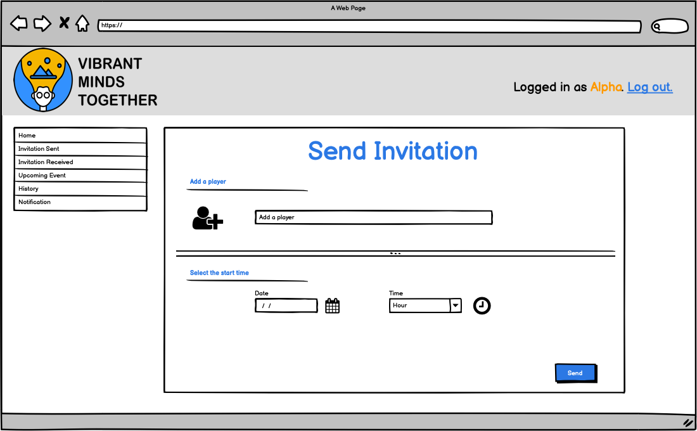
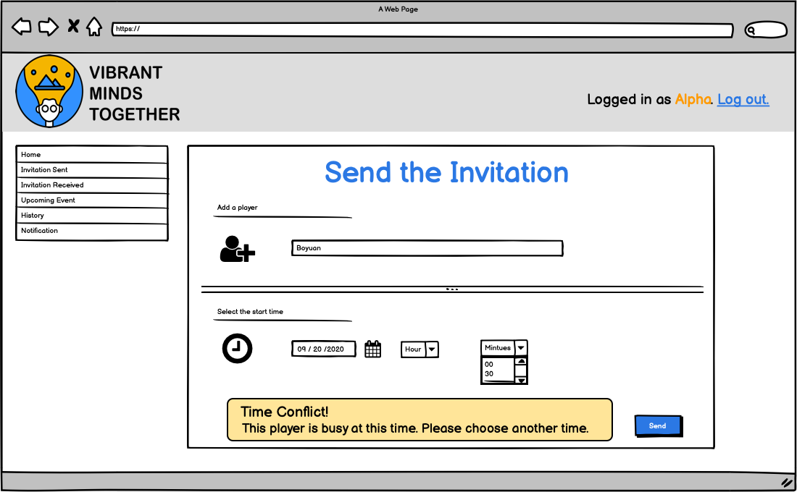
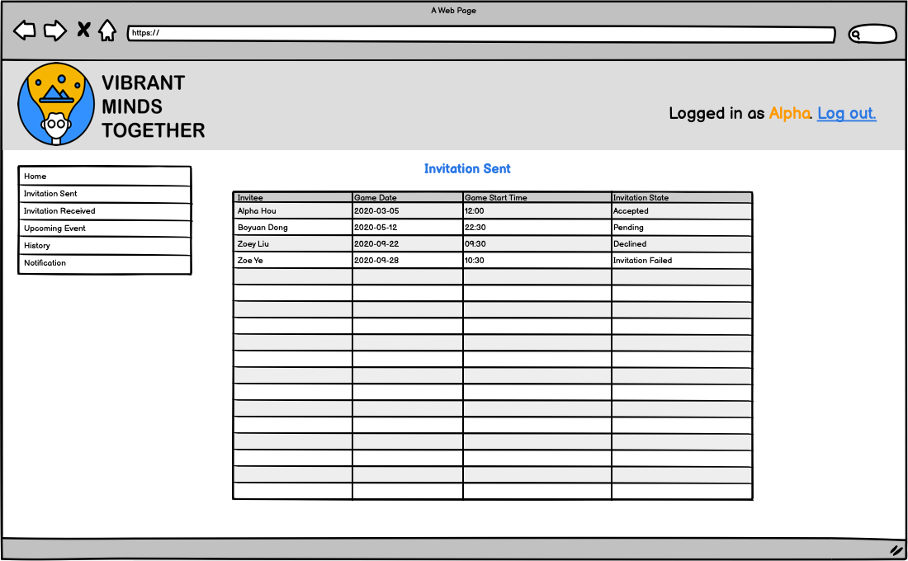
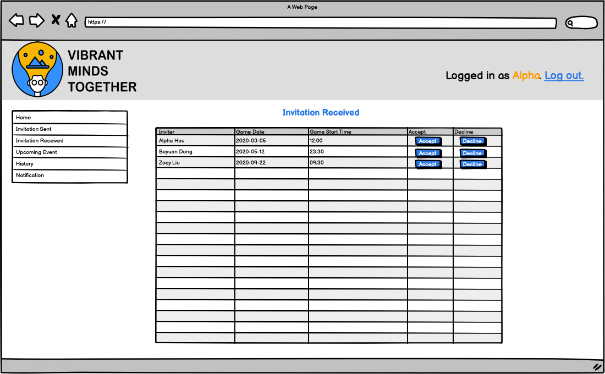
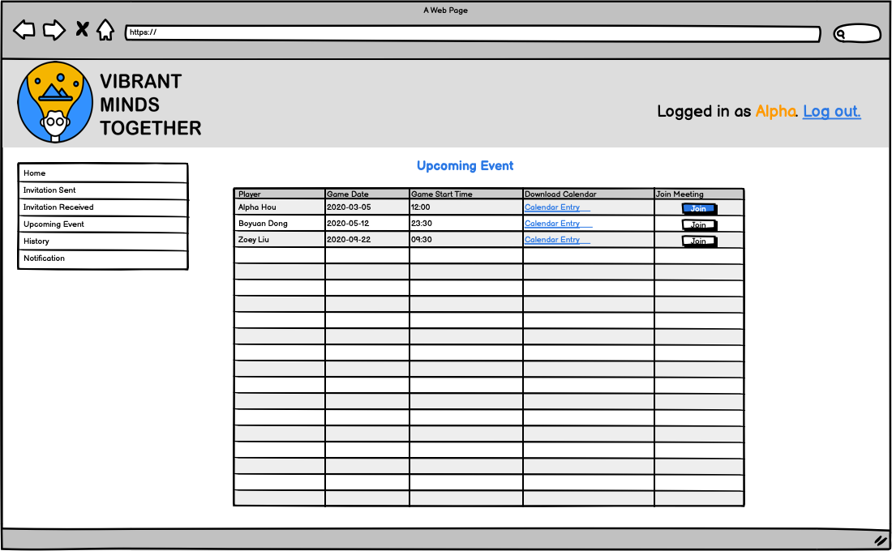
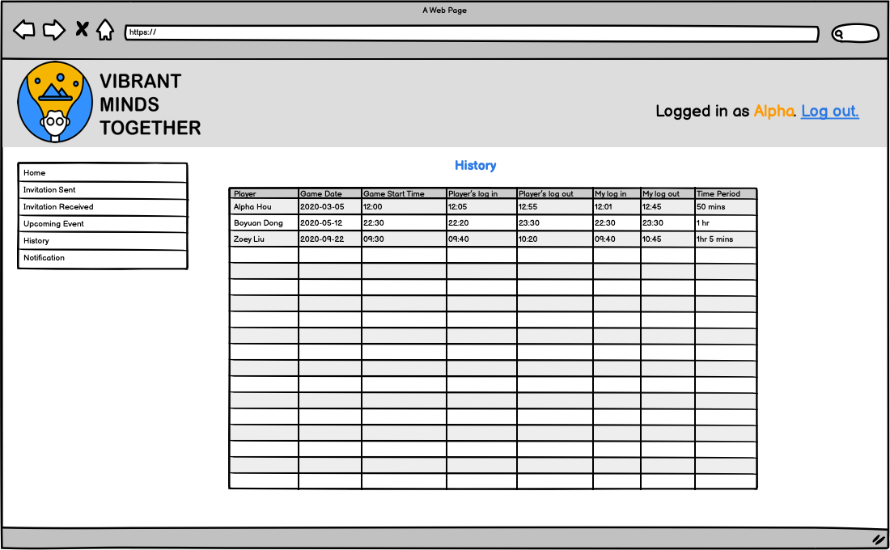

Overview
Overview
Date: September 26 Authors: Boyuan Dong, Mingjun Hou
VibrantMinds Together system is a system that is intended to support people to play vibrant-minds games together while having the video-conference. This system will be a web application mimicking social playing with board games. This system is intended for all players to play in VibrantMinds Together.
Project Glossary
- User Anyone who does not have an account in Vibrant Minds.
- Player Anyone who has an account in Vibrant Minds.
- Inviter Player who sends the invitation.
- Invitee Player who receives the invitation.
- Login/SignUp Page An interface where users can sign in to their account.
- Username/Email A keyword hint which prompts the users to enter their name/email address.
- Password A keyword hint which prompts the users to enter the password of their account.
- Game Date The specific date of your video conference.
- Game Start Time The specific time of your video conference. It allows for meetings to be only at:00 or:30.
- Home Page Inviting a player.
- Select Player Entering the name/email address of the player you want to invite.
- Select Game Date and Start Time Selecting the specific date and time of your video conference.
- Send Invitation A button that sends an invitation notification to another player’s Notification Page.
- Invitation Sent Page Showing a list of the invitations the player sent.
- Sent Invitation Record Records, including the details (Invitee/Game Date/Game Start Time/Invitation State) of the invitation the player sent.
- Invitation State Showing Accepted/Declined/Pending/Invitation Failed to record the state of the invitation sent.
- Invitation Received page Showing a list of the invitations the player received.
- Invitation Received Record Records, including the details (Inviter/Game Date/Game Start Time/Accept Option/Decline Option) of the invitation the player received.
- Accept Invitation Accept button allows the player to accept the invitation.
- Decline Invitation Decline button allows the player to decline the invitation.
- Invitation Failed The invitation is failed if the user you invited does not have an account in Vibrant Minds.
- Upcoming Event Page Showing a list of confirmed upcoming video-conferences the player is going to attend.
- Upcoming Event Record Records, including the details (Player/Game Date/Game Start Time/Downloadable Calendar Entry/Join Meeting Option) of the confirmed upcoming video-conference the player is going to attend.
- Calendar Entry A downloadable link with a .ics format file that could be imported on the players’ calendar application.
- Join Meeting A button with a link can jump to the Main Screen so that the player can join the meeting.
- History Page Showing a list of past video-conferences the player has attended.
- History Record Records, including the details (Player/Game Date/Game Start Time/Timestamp/Time Period) of the history video-conference the player has attended.
- Timestamp Record the time when both players log in the video-conference and log out of the video-conference.
- Time Period How long the video-conference lasted (from the earliest login time to the last log out time).
- Notification Page Showing a list of notifications the player received.
- Notification Notifications who accepted/declined/failed to receive my invitation with a specific time. Also, records, including the details (Invitee/Game Date/Game Start Time/Invitation State) of the invitation the player sent, so that the player can track the information.
- Main Screen The video conference page with 4 tiles split the screen.
- Video Feed Real-time live video streaming of the two players.
- Game Screen Real-time game video streaming that they are playing with during the video conference.
- Log Out A button to leave the video conference.
- Score Updates A ticker tape at the bottom of the screen with score updates
- Multiple templates for screen layout Click one of four video windows to enlarge the window, making multiple templates for screen layout.
- Enlarge the Video Window Make the clicked window the largest, the other three windows displayed as a row with a smaller scale at the top of the screen.
- Invitee Error Email An email message that tells the user does not have an account, including a link to sign-up for Vibrant Minds.
- Inviter Error Email An email message that tells the inviter that the user he/she invited does not exist.
- Invitations conflict When the inviter tries to send an invitation to an invitee, the invitee has already had a meeting event at the start time, the inviter will get an automatic "Name is busy at this time".
Storyboarding








Use Cases or User Stories
User stories can be found under the requirements section here.
Technical Resources
- Front-end:
React - Back-end:
Django - Deployment:
DockerTravisCI - Teleconferencing:
Jitsi
(Subject to change...)
Similar Products
HouseParty
- Face to Face Social Network. Houseparty is a social networking service that enables group video chatting through mobile and desktop apps.
HouseParty. - <functionalities, invite users to join video-conference while playing the same game together online>
Discord
- Whether you’re part of a school club, gaming group, worldwide art community, or just a handful of friends that want to spend time together, Discord makes it easy to talk every day and hang out more often.
Discord. - <functionalities, video-conference and play different games while seeing both games screens and video feeds sharing video and audio>
Similar Open-source Projects
BigBlueButton
- A web conferencing software system that supports the online learning facility.
- <functionalities, share audio and video>